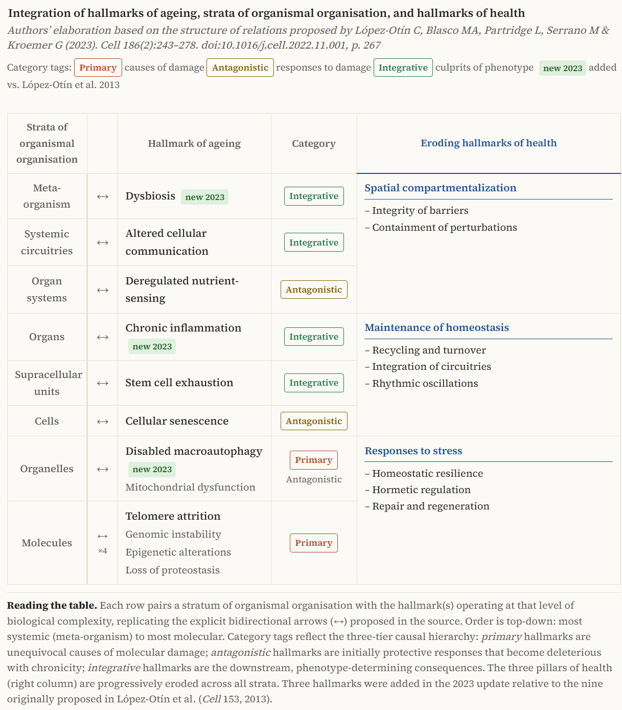

2 The Hallmarks of Ageing: An Expanding Framework
The previous chapter ended on a single idea — that ageing may be the loss of the information holding a cell’s identity in place. A single idea, however, cannot be operated on. This chapter converts it into the working object of the field: a short, structured and openly contested list of the processes through which ageing happens — the framework that gives the discipline its shared language, and whose strengths and limits set the agenda for everything that follows.
For most of its history the biology of ageing suffered from a peculiar handicap: not a shortage of findings but a surfeit of disconnected ones. Hundreds of laboratories described changes that accompany growing old — shortening chromosomes, sluggish mitochondria, stiffening tissues, failing stem cells — without any agreed way of relating them. The knowledge, as one recent review puts it, was “relatively unconnected and disordered” (Tartiere et al., 2024). What the field lacked was not data but a map.
In 2013 it acquired one. The Hallmarks of Aging proposed that the unmanageable variety of age-related change could be organised into a small set of cellular and molecular processes, each defined by strict criteria and related to the others in a coherent architecture (López-Otín et al., 2013). The proposal was so useful that it reorganised the discipline around itself, and a decade later its authors expanded it (López-Otín et al., 2023). This chapter sets out that framework, but it does more than recite a list. It examines where the framework came from, why it was built the way it was, how it has grown, and — most important for a book about reversing ageing — the live methodological argument over whether a catalogue of hallmarks describes the causes of ageing or merely its symptoms.
2.1 A framework borrowed from cancer
The hallmarks idea was not invented from nothing. It was modelled, explicitly, on the most successful conceptual framework in modern biomedicine: Hanahan and Weinberg’s Hallmarks of Cancer, which in 2000 distilled the chaos of cancer biology into a handful of acquired capabilities that tumours must obtain (Hanahan & Weinberg, 2000). That framework gave a fractured field a shared vocabulary and a research agenda, and its influence was the template the ageing community sought to reproduce.
What such a framework does is subtle. It does not explain a phenomenon so much as organise it — providing a parts list specific enough to structure experiments yet general enough to span tissues, species and laboratories. Its value is coordinative: once a community agrees on the parts, results become comparable and gaps become visible. The price, as we shall see, is that a parts list can be mistaken for a causal mechanism.
Crucially, López-Otín and colleagues did not admit processes to the list informally. A candidate had to satisfy three demanding criteria (López-Otín et al., 2013; Tartiere et al., 2024):
To qualify as a hallmark of ageing, a process must meet all three of the following:
- It appears during normal ageing. The change must be a feature of physiological ageing, not only of disease or laboratory artefact.
- Aggravating it accelerates ageing. Experimentally worsening the process should hasten ageing or shorten lifespan.
- Ameliorating it slows ageing. Experimentally correcting the process should retard ageing and extend healthy lifespan.
The third criterion is the demanding one. It is interventional, not merely observational: it asks that the process be a lever, not just a marker. It is also the criterion that turns a descriptive catalogue into a target list — and, as Section 2.5 will argue, the one the evidence most often strains to meet.
The framework’s reception was extraordinary. The original paper has attracted citations at a rate exceeding a thousand a year, and it has spawned an entire genre of derivative catalogues — hallmarks of health, of cellular senescence, of brain and cardiovascular ageing, even “meta-hallmarks” shared between ageing and cancer (Tartiere et al., 2024). A review assessing whether the hallmarks achieved their founding purpose concludes that they have served as a conceptual scaffold not only for ageing research but for neighbouring fields (Tartiere et al., 2024). Few ideas in the life sciences have organised so much so quickly.
2.2 The twelve hallmarks
The 2013 framework named nine hallmarks; the 2023 revision added three, giving the twelve now in common use (López-Otín et al., 2013, 2023). Figure 2.1 lists them with their classification, the core failure each names, and the chapter in which this book takes up the corresponding therapeutic strategy. The point of the table is not memorisation but orientation: it is the index to Parts II and III.
| # | Hallmark | Group | What fails | Addressed in |
|---|---|---|---|---|
| 1 | Genomic instability | Primary | Accumulating DNA damage — breaks, point mutations, copy-number and chromosomal changes | Ch. 3 |
| 2 | Telomere attrition | Primary | Progressive loss of chromosome-end caps, limiting replicative capacity | Section 4.1 |
| 3 | Epigenetic alterations | Primary | Drift in DNA methylation, histone marks and chromatin, blurring cell identity | Section 3.3 |
| 4 | Loss of proteostasis | Primary | Decline of protein folding, chaperoning and clearance; misfolded-protein build-up | Ch. 5 |
| 5 | Disabled macroautophagy | Primary | Failing self-digestion and organelle renewal (added 2023) | Ch. 5–6 |
| 6 | Deregulated nutrient-sensing | Antagonistic | Dysregulated IIS, mTOR, AMPK and sirtuin signalling | Ch. 5–6 |
| 7 | Mitochondrial dysfunction | Antagonistic | Impaired bioenergetics and excess reactive oxygen species | Ch. 5 |
| 8 | Cellular senescence | Antagonistic | Accumulating arrested, inflammatory cells (the SASP) | Section 4.2, Ch. 7 |
| 9 | Stem-cell exhaustion | Integrative | Failure of tissue renewal | Ch. 8–9 |
| 10 | Altered intercellular communication | Integrative | Pro-ageing systemic signalling between cells and tissues | Ch. 8 |
| 11 | Chronic inflammation | Integrative | Sterile, low-grade “inflammageing” (added 2023) | Section 4.2 |
| 12 | Dysbiosis | Integrative | Disruption of the microbiome (added 2023) | Ch. 6 |
Macroautophagy — the process by which a cell engulfs and digests its own worn components for renewal — was originally folded inside “loss of proteostasis” in 2013. It was carved out as a hallmark in its own right in 2023 because the intervening decade made its specific causal role hard to ignore: experimentally disabling autophagy induces features of ageing, while boosting it — for example by overexpressing the autophagy protein Atg5 — extends both lifespan and healthspan in mice (López-Otín et al., 2023; Tartiere et al., 2024). The promotion is a small illustration of how the framework is meant to work: as the evidence for a process’s causal contribution (criteria 2 and 3) matures, its standing in the catalogue is revised. It also previews a recurring theme — that nutrient-sensing, autophagy and dietary restriction are mechanistically entangled, the subject of Chapters 5 and 6.
2.3 An architecture, not a list
The most important and most overlooked feature of the framework is that the twelve are not a flat enumeration. They are sorted into three tiers that encode a hypothesis about how ageing unfolds (López-Otín et al., 2013, 2023; Tartiere et al., 2024).
The primary hallmarks are the causes of cellular damage, and they are unambiguously deleterious: genomic instability, telomere attrition, epigenetic alterations, loss of proteostasis and disabled macroautophagy. Damage from these accumulates inexorably with time; nothing about them is beneficial.
The antagonistic hallmarks are responses to that damage, and their defining feature is dose-dependence: helpful at low intensity, harmful when chronic or excessive. Deregulated nutrient-sensing, mitochondrial dysfunction and cellular senescence all belong here. Low-grade mitochondrial stress, for instance, triggers an adaptive protective response — mitohormesis — whereas sustained dysfunction floods the cell with reactive oxygen species and drives inflammation and death (López-Otín et al., 2023). Cellular senescence is the clearest case of all: in youth it suppresses tumours and aids wound healing, but its accumulation in age corrodes tissue function — which is precisely why eliminating senescent cells improves health in mice (Tartiere et al., 2024). These hallmarks are double-edged by design, and a therapy that simply abolished them would do harm.
The integrative hallmarks are the culprits of the visible phenotype, emerging when the damage from the other two tiers overwhelms the body’s homeostatic capacity: stem-cell exhaustion, altered intercellular communication, and the two 2023 additions — chronic inflammageing and dysbiosis. That communication is genuinely systemic was shown dramatically by heterochronic experiments in which factors carried in old blood induce ageing signatures in young animals (Tartiere et al., 2024).
The architecture, then, is a hierarchy: primary damage initiates, antagonistic responses compensate and then betray, and integrative failures manifest when compensation is exhausted (Figure 2.1). The tiers are not independent — and this is consequential for therapy. Because the hallmarks form an interacting network, intervening on one routinely shifts the others, which is the rationale behind the growing interest in combinatorial interventions that engage several nodes at once rather than betting on a single target (Tartiere et al., 2024).

2.4 An expanding — and contested — universe
By design, the list was never closed. Its authors described it as open to revision, and the field has duly tested its edges (Tartiere et al., 2024). Independent groups proposed parallel catalogues that converged on much the same processes — evidence the framework was capturing something real rather than arbitrary (Kennedy et al., 2014). Others pushed to enlarge it. A 2022 Copenhagen meeting summary, New Hallmarks of Ageing, argued for additional entries including compromised autophagy, microbiome disturbance, altered mechanical properties, splicing dysregulation and inflammation (Schmauck-Medina et al., 2022). The 2023 revision absorbed three of these — macroautophagy, inflammation, dysbiosis — while others, such as splicing dysregulation and the loss of tissues’ mechanical properties, remain candidates awaiting stronger evidence on the demanding second and third criteria.
The same openness is visible at the frontier of proposal. Increased cell size, for instance, has been advanced as an emerging hallmark on the strength of findings that cells enlarge with age, that artificially enlarging them accelerates ageing in vitro while shrinking them rejuvenates, and that smaller cells correlate with longer lifespan across species; yet reviewers remain cautious about whether it meets the full criteria (Tartiere et al., 2024). Such cases show the framework’s self-correcting machinery at work — but they also expose a structural worry.
A framework that grows whenever a plausible new process appears risks a slow drift from explanation towards inventory. Each addition is individually defensible, yet a list of twenty loosely interacting hallmarks explains less, in one sense, than a list of three sharply causal ones, because explanatory power lies partly in parsimony. The tension is not unique to ageing: the hallmarks of cancer themselves expanded from six capabilities in 2000 to a substantially longer set of “new dimensions” two decades later (Hanahan, 2022; Hanahan & Weinberg, 2000). Frameworks built to organise a field tend to accrete as the field matures. Whether that accretion is convergence on truth or dilution of a concept is a judgement the reader should keep live throughout this book.
2.5 From description to causation
This is the framework’s deepest unresolved question, and the one that matters most for a book about reversal. The hallmarks were assembled, in large part, from features that accompany ageing. The three criteria are designed to push beyond mere accompaniment towards causation — especially the third, which demands that correcting a process slow ageing — but in practice the evidence is uneven, frequently confined to mice and short-lived models, and often unable to separate a cause from a downstream consequence.
Think of the hallmarks as the warning lights on a car’s dashboard. They are reliable: when the engine is failing, lights come on, and a mechanic can group them sensibly — some about the engine, some about the brakes, some about the electrics. But a warning light is not the fault it signals, and replacing the bulb fixes nothing. A framework of hallmarks is, at minimum, a well-organised dashboard. The open question is how many of its lights are wired to genuine upstream faults that we can repair, and how many merely glow because something, somewhere, has already gone wrong. A therapy aimed at a light rather than a fault will measure beautifully and change little.
Two responses to this challenge run through the rest of the book. The first is to look for an upstream cause of which several hallmarks are consequences. The information view introduced in Section 1.5 is exactly such a move: if a loss of epigenetic information is what drives epigenetic alterations, stem-cell exhaustion and altered communication alike, then it, not its symptoms, is the thing to target (Yang et al., 2023). Recent work pursues this still further, proposing systemic epigenetic dysregulation as a unifying driver of ageing and therefore a therapeutic target in its own right (Yücel & Gladyshev, 2026). On this reading the hallmarks are not twelve independent faults but twelve readouts of a smaller number of informational failures.
The second response abandons the search for a single cause and embraces complexity directly. A complex-systems account treats ageing as an emergent property of the interaction network among the hallmarks, in which functional decline arises from the dynamics of the whole rather than the failure of any part (Kok et al., 2025). This reframing has a sharp practical corollary, already visible in Figure 2.1: if ageing is a network phenomenon, single-target interventions should systematically disappoint, and the most effective strategies will be those that perturb several nodes at once. The persistent gap between striking single-target results in mice and modest effects in humans, examined in Section 11.1, is consistent with exactly this expectation.
2.6 From hallmarks to targets
Whatever its philosophical status, the framework’s payoff is intensely practical: it converts a phenomenon into a target list. The most recent articulation completes the analogy with cancer biology that inspired the framework in the first place. Just as oncology distinguishes oncogenes from tumour-suppressors, geroscience now speaks of gerogenes and gerosuppressors — pathways that respectively promote and restrain ageing — and of a precision geromedicine that would match interventions to an individual’s molecular profile (Kroemer et al., 2025). Each hallmark, in this light, is a portfolio of candidate targets and of geroprotectors aimed at them, and the structure of this book follows that mapping: epigenetic alterations to reprogramming (Section 8.1), nutrient-sensing and autophagy to dietary restriction and its mimetics (Ch. 6), senescence to senolytics (Ch. 7), and so on.
It is worth stating plainly what the framework has and has not delivered. It has given the field a shared language, a research agenda, comparable experiments, and a rational basis for choosing targets — an organising achievement that, by its founders’ own assessment, succeeded beyond ageing research itself (Tartiere et al., 2024). It has not, by itself, settled which hallmarks are causes and which are consequences, nor proved that correcting any of them will lengthen healthy human life. Holding both of these truths at once — the framework as indispensable map and as unfinished argument — is the right posture for the chapters that follow.
We have turned a single principle into a structured map: twelve processes, sorted into causes, compensations and consequences, interacting as a network rather than acting alone — and we have flagged the question on which the field’s therapeutic promise ultimately rests, whether these are the faults of ageing or its warning lights.
Part II now walks into the map one tier at a time. It begins where the thread of Chapter 1 points most directly and where the case for an upstream, informational cause is strongest: the epigenome. The next chapter takes up epigenetic alterations, the clocks that read them, and the information theory that would make them not one hallmark among twelve but the master process beneath several — the place where ageing is most precisely measured, and, if the theory is right, most plausibly reversed.